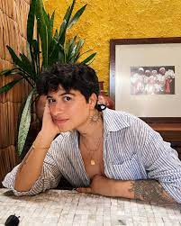

| Ficha de Identificação — Elayne Baeta | |
|---|---|
| Nome completo | Elayne Baeta |
| Data de nascimento | 4 de setembro de 1997 |
| Local de nascimento | Salvador, Bahia, Brasil |
| Profissão | Escritora, criadora de conteúdo, influenciadora digital |
| Obra de destaque | O Amor Não É Óbvio |
| Última atualização: setembro de 2025 | |
Elayne Baeta é uma autora brasileira que ganhou destaque ao escrever romances
com temática LGBTQIA+,
especialmente romances lésbicos juvenis. Conhecida por sua autenticidade,
ela surgiu em plataformas digitais (como Wattpad) e rapidamente conquistou grande público.
Seus
livros têm repercussão tanto entre leitores quanto na mídia, por contribuírem com visibilidade
e representatividade.
Início: começou postando no Wattpad, onde o livro "O Amor Não É Óbvio"teve grande número de leituras.
Obra de estreia: "O Amor Não É Óbvio" foi publicado em
2019 pelo selo Galera, da Editora Record.
Já em novembro de 2024 lançou
"Coisas Óbvias Sobre o Amor", sequência de
"O Amor Não É Óbvio".
Elayne já trabalhou em profissões diversas antes de focar na escrita
(relatos mencionam trabalhos como atendimento em funerária, venda etc.). Identifica-se como lésbica
e aponta representatividade como objetivo importante de sua obra. Também já relatou receber críticas e ameaças
em razão da visibilidade do trabalho.
(Fonte: Jornal de Brasília)